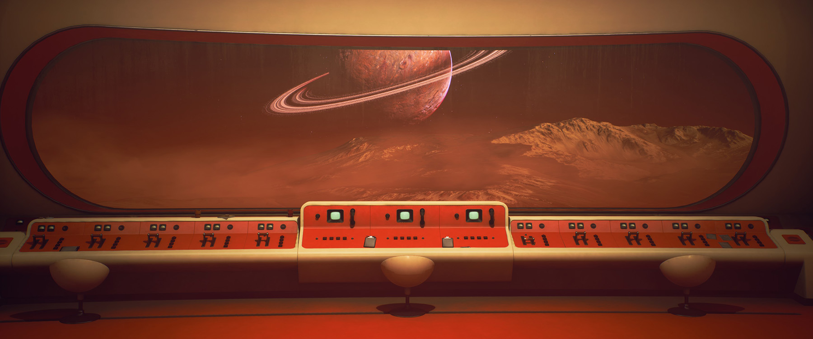

The Invincible
Nu înțeleg prea bine de ce termenul „walking simulator” are o conotație negativă pentru o anumită categorie de gameri. Chiar dacă sunt jocuri cu interactivitate scăzută, cu parcurs liniar sau puzzle-uri simple, asta nu le face jocuri inferioare, ci doar înseamnă că accentul este pus pe poveste și pe experiența în sine, nu pe gameplay. Până la urmă, acest stil de joc este o alegere, în funcție de obiectivul (și constrângerile) dezvoltatorilor. Iar când adaptezi o carte, un walking sim este o alegere la îndemână, simplă dar solidă, ce-ți permite să reproduci relativ ușor experiența citirii unei cărți într-un alt mediu.
Dezvoltat de studioul polonez Starward Industries, The Invincible este bazat pe romanul SF omonim (1963) al lui Stanisław Lem, dar nu este o adaptare directă, ci un prequel plasat chiar înainte de începutul cărții – personajele și povestea jocului sunt originale, dar se leagă în numeroase moduri de roman. Acțiunea se desfășoară pe Regis III unde aterizează micul nostru echipaj pentru explorare, cu câteva zile înainte de sosirea lui The Invincible, o puternică navă spațială a facțiunii rivale1 din universul jocului.
În carte, The Invincible vine pe planetă să investigheze misterul dispariției unei nave similare, Condor, împreună cu tot echipajul ei de aproape 100 de oameni și o putere de foc capabilă să distrugă întreaga planetă.
În joc, însă, echipa noastră nu cunoaște aceste detalii și își vede de cercetări științifice pe planeta care, conform măsurătorilor inițiale, ar trebui să fie un paradis pentru viață, dar care totuși pare complet abandonată și aridă. În mod evident, lucrurile nu merg conform planului, iar noi, în rolul lui Yasna, astrobiologul echipei, trebuie să pornim în căutarea colegilor cu care am pierdut contactul, iar mai apoi să deslușim Misterul planetei. Sună a clișeu, la fel ca și primele ore de joc, în care Yasna se trezește pe planetă singură și cu amnezie, dar toate acestea au de fapt o bună explicație narativă.
Lucrurile se clarifică treptat și începem să înțelegem ce se întâmplă, dar fiecare răspuns dă naștere unor semne de întrebare din ce în ce mai mari. Misterul se amplifică pe măsură ce înaintăm pe firul poveștii, într-un ritm bine dozat, ce alternează momentele liniștite cu cele mari descoperiri sau de tensiune și decizii importante.
***
După cum ați intuit din introducere, jocul e (aproape) un walking simulator, o experiență liniară first-person, dar asta nu înseamnă că nu facem altceva decât să ținem apăsat pe W. Sunt destule lucruri de făcut, obiecte de folosit, butoane de învârtit, hărți de consultat, vehicule de condus și dialoguri de dialogat, ca să nu mai zic de alegerile care influențează finalul jocului. Și nu doar atât, dar prin felul în care se așterne povestea, liniaritatea se simte mai puțin ca o constrângere și mai degrabă ca o consecință naturală a întâmplărilor în care suntem aruncați. Ca să fac o comparație, e mai aproape de SOMA sau Firewatch decât de Gone Home sau Dear Esther.
Yasna la începutul jocului
Cum este de așteptat, inima jocului o constituie povestea și personajele, în speță Yasna și comandantul Novik cu care suntem în permanent contact radio. Relația dintre cei doi evoluează organic, pe măsură ce Yasna trece prin tot felul de întâmplări și descoperiri, Novik fiind tot timpul aproape cu o vorbă bună, sau detalii suplimentare, sau explicații pe marginea deciziilor pe care trebuie să le ia în calitate de lider. Dialogurile sunt scrise excelent, ajutate și de un voice acting foarte bun, creionând astfel niște persoane credibile, oameni de știință fără abilități extraordinare, aruncați într-o situație excepțională, care reacționează în mod natural, cu o minte analitică, dar și cu empatie față de semeni, chiar dacă nu tot timpul sunt de acord cu privire la ce e de făcut. Subiectele discuțiilor variază destul de mult, de la obiectivele imediate, la analiză științifică prilejuită de diverse momente din timpul călătoriei, ba chiar și puțină politică, filozofie și multe altele. Aici se remarcă în special Yasna, cu o personalitate caldă, plăcută, fără urmă de cinism, blazare sau glumițele șmecherești care devin prea des o cârjă de caracterizare a multor altor personaje. Yasna nu este Mark Watney, chiar dacă au în comun existența solitară pe o planetă străină și lungi perioade de mers, fie pe jos, fie cu rover-ul. Opțiunile de dialog pe care le alegem vor nuanța și mai mult caracterul lui Yasna și modul în care evoluează relația ei cu Novik, iar unele dintre ele vor influența și finalul jocului.
Aici se află de fapt și una din puținele critici pe care le am de adus jocului, și anume că nu e clar de la început ce opțiuni vor schimba cursul narațiunii, și care doar adaugă o tușă personală în conversații, fără alte implicații. Și nu că ar fi ceva în neregulă cu abordarea asta, dar se întâmplă uneori ca unele alegeri aparent banale să dea naștere într-un mod abrupt la niște consecințe destul de importante, iar alte alegeri care par importante să nu conteze până la urmă absolut deloc.
Comandantul Novik, partenerul nostru de discuții în cea mai mare parte a jocului. A se observa și aparatura „futuristă”
{kind=link}
{kind=link}
Mai fac o paranteză ca să menționez o chestie drăguță pe care mi-ar plăcea să o întâlnesc mai des în jocuri – în meniu se găsește o secțiune cu un mini-roman grafic care sumarizează povestea pe măsură ce o parcurgi (cu alegerile aferente), un bonus drăguț în sine, dar care care servește foarte bine și ca recapitulare pentru momentele în care iei o pauză de la joc și revii după o perioadă mai mare.
Povestea propriu-zisă se leagă într-un mod inedit de romanul lui Lem și, pe măsură ce jucăm, devine limpede ce metodă bună au găsit cei de la Starward ca să adapteze romanul, reușind în același timp să aibă un scenariu și personaje originale, dar care să se integreze în același timp într-un mod cât se poate de organic cu romanul. Nu intru prea mult în detalii aici (am evitat să dau spoilere chiar și în screenshots sau alegerea trailerului), dar, chiar dacă sunt momente în care împrumută mai mult decât e necesar din carte, prin modul în care este pusă în scenă, cât și prin elementele originale, narațiunea jocului face cinste operei originale, reușind să redea bine spiritul cărții și temele filozofice abordate de Lem, un exponent al ideii că omul nu este neapărat menit să cucerească Natura sau să ne băgăm nasul absolut peste tot în univers.
Cât privește finalul jocului, există cel puțin 11 modalități în care putem încheia parcursul Yasnei, dar nu sunt fundamental diferite între ele, ci, cu câteva excepții, doar modifică parțial deznodământul, fără să schimbe substanțial cursul poveștii. Asta nu înseamnă că le puteți vedea pe toate doar încărcând ultimul checkpoint, unele dintre ele fiind influențate de alegeri făcute cu mult timp înainte. Unele dintre finaluri ar putea fi considerate chiar „canon”, având în vedere cât de fin se leagă de carte, dar nici celelalte nu reprezintă o abatere radicală. Important de reținut este că și cele mai diferite finaluri sunt fidele cel puțin în spirit cărții, fără să trădeze filozofia lui Lem sau tema centrală a romanului.
{kind=link}
{kind=link}
{kind=link}
{kind=link}
{kind=link}
Un alt element de bază al jocului o constituie lumea înconjurătoare și atmosfera, capitol la care jocul excelează. În ton cu romanul lui Lem, tehnologia din joc este realizată în stilul „atompunk”, o extensie a tehnologiei din anii 60, plină de tot felul de instrumente și aparate masive, butoane, comutatoare, diode, tuburi catodice, contoare de radiații, roboți și vehicule cu antene, farfurii zburătoare, pistoale laser și bineînțeles arme nucleare, cu multe dintre acestea având ocazia să interacționăm sau să le observăm în detaliu de aproape. În plus, interfața e aproape inexistentă, iar animațiile de interacțiune extrem de detaliate ajută și mai mult la imersiune. Ce mai, un deliciu pentru orice pasionat de retrofuturism.
La rândul ei, planeta este aproape un personaj în sine. Peisaje sunt superbe, stilizate, în nuanțe pastelate de roșu, maro, turcoaz sau albastru, pe un fundal cu planete cu inele de gheață și alți sateliți, scoase parcă din coperțile revistelor și cărților SF din anii 50-60. Spre deosebire de alte jocuri, relieful chiar arată ca un loc real, supus acțiunii eroziunii și elementelor înconjurătoare, și care te îndeamnă la explorare, chiar și dacă nu ar fi existat povestea care să te împingă mai departe. Chiar și personajele remarcă la un moment dat în ce loc frumos au ajuns.
{kind=link}
{kind=link}
{kind=link}
{kind=link}
{kind=link}
{kind=link}
{kind=link}
***
Am tot menționat romanul lui Lem, dar până la urmă cui se adresează jocul? În primul rând, pentru cine a citit deja romanul, nu veți găsi elemente noi de poveste, ceva care să completeze Misterul central din carte. Ba mai mult, prima parte a jocului o să fie lipsită de suspans, știind deja cu ce urmează să se confrunte Yasna. În plus, jocul reproduce unele momente mai importante, dialoguri sau descrieri din carte (uneori preluate ad literam) folosind noile personaje și întâmplări. Veți fi compensați însă din plin la capitolul atmosferă, unde este foarte satisfăcător să vedeți de aproape tot ce descrie cartea, să vă plimbați pe Regis III și să vedeți de aproape toată tehnologia descrisă de Lem.
Asta nu înseamnă că tot jocul va fi lipsit de surprize sau că veți putea să anticipați tot ce se întâmplă. Ba aș putea să pariez că jocul se bazează pe familiaritatea jucătorilor cu povestea originală pentru a pune în scenă o dezvăluire aproape de final ce va recontextualiza tot ce s-a întâmplat până atunci și vă va face să apreciați și mai mult felul în care au abordat cei de la Starward această adaptare.
Pentru cine nu a citit cartea, veți descoperi o poveste sci-fi excelentă și bine regizată, peste media cu care ne-au obișnuit jocurile video — deloc de mirare, având în vedere materialul sursă — pe lângă care veți primi ca bonus tot ce am descris mai sus legat de atmosferă și lumea înconjurătoare. Veți rata desigur unele easter eggs sau bucuria recunoașterii unor elemente, dar ăsta e un preț mic de plătit pentru ce primiți în schimb.
Dacă totuși plănuiți să citiți și cartea, sau începutul jocului vă deschide apetitul pentru lectură, poate ar fi mai bine să o faceți înainte de a continua jocul, deoarece acesta vă va fura revelațiile importante din roman, iar strict ca poveste, romanul e superior. Jocul mai are și alte lucruri de oferit, astfel că-l puteți continua ulterior.
Aceasta a fost și experiența mea și e posibil să fie și modul optim de a vă afunda în universul lui Lem. Am parcurs jocul timp de câteva ore, până într-un punct în care am crezut că o să facă joncțiunea cu acțiunea cărții, apoi am citit cartea 2 și apoi am continuat jocul cu noul context în minte și am putut să apreciez și mai mult atât elementele originale ale jocului, cât și cele preluate direct din roman.
Extras dintr-un mini-comic book disponibil pe site-ul Starward ce redă o poveste separată de cea din joc, dar atinge aceeași temă ca a jocului și a romanului (găsiți linkul jos la resurse)
***
Deși am început articolul scuzând cumva liniaritatea jocului, poate ar trebui totuși să menționez și câteva aspecte mai puțin pozitive. Unele secțiuni de drum sunt cam lungi, iar checkpointurile sunt cam rare aici, astfel că dacă ai ratat simbolul de save și ai nevoie să ieși din joc, vei relua o bucată bună de joc. Uneori nu e clar în ce mod poți interacționa cu butoanele, iar animațiile de interacțiune cu diverse elemente durează cam mult și nu pot fi sărite. Iar în privința poveștii, se simte un mic dezechilibru narativ în partea finală, jocul are tendința să fie excesiv de detaliat cu unele explicații, iar alte întâmplări rămân pur și simplu fără nicio justificare logică sau narativă, indiferent dacă ai citit sau nu cartea. Și prețul de 30 de euro mi se pare puțin cam mare pentru ce oferă, mai ales că poate fi terminat în 8-10 ore.
Dar până la urmă, toate acestea contează prea puțin. E drept și că, personal, dacă îmi place un joc3, am tendința să fiu mai îngăduitor cu aspectele lui mai puțin plăcute pentru a mă bucura de restul jocului. Însă cu atât mai mult în jocul de față aspectele de criticat sunt doar niște imperfecțiuni minore la care probabil că nici nu m-aș gândi de două ori dacă n-ar trebui să explic altcuiva despre ce e vorba în joc. Sunt lucruri care nu detracteaza de la experiență și sunt un preț mic de plătit pentru o poveste sci-fi excelent realizată vizual și narativ. ■

- Poate cea mai importantă deviere de la „lore”-ul romanului este adăugarea unor facțiuni care recreează rivalitatea dintre americani și sovietici din timpul Războiului Rece, ceea ce facilitează premisa de la care pleacă jocul – echipajul nostru face parte din echipa „sovietică” și trebuie să-și încheie misiunea înainte de sosirea „aliaților” [return]
- Apropo, care e treaba cu toate prefețele și cuvintele înainte și notele sau alte pagini de la începutul cărților, care se apucă să analizeze în detaliu tot ce se întâmplă sau ce a vrut să spună autorul, chiar înainte să apuci să citești măcar o literă din cartea propriu-zisă? Oare nu putem gusta sau înțelege ce urmează să citim dacă nu ni se așterne cu atenție contextul potrivit înainte, sau fără să ni se prezinte importanța istorică sau literară a monumentului narativ la baza căruia ne aflăm? Se știrbește cu ceva valoarea analizei dacă sunt plasate la final? /rant [return]
- A ajutat și că l-am luat la reducere :) [return]
Galerie imagini